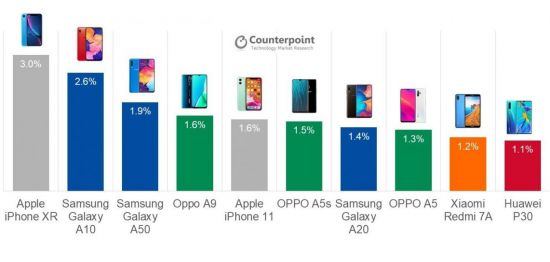

[아시아경제 한진주 기자] 마진이 높은 플래그십 스마트폰에 주력해왔던 애플이 올해는 중저가 라인업을 보강할 것으로 보인다. 전 세계적으로 중저가 스마트폰 시장이 빠르게 성장하고 있는데 따른 전략으로 풀이된다. 삼성전자도 중저가 라인업을 강화하고 있어 플래그십에 이어 중저가 시장에서도 두 회사의 격전이 예상된다.
2일(현지시간) 대만 디지타임즈는 대만의 애플 공급망을 인용해 애플이 올해 OLED 디스플레이를 탑재한 4개 모델과 LCD 2개 모델까지 총 6개의 아이폰을 출시할 것이라고 밝혔다.
앞서 애플 전문 분석가인 밍치궈 TF 인터내셔널증권 애널리스트는 아이폰SE2를 두 개 모델로 나눠 2020년과 2021년에 각각 출시할 것이라는 보고서를 발표한 바 있다. 그는 "애플이 2020년 4,7인치 아이폰SE2를 비롯해 총 5개 모델을 출시할 것"이라며 "2021년 이후에 아이폰SE2 플러스 모델도 출시될 것"이라고 전망했다.
밍치궈는 상반기에 아이폰SE2, 올 하반기에 OLED 디스플레이를 적용한 5.4인치와 6.1인치 2종, 6.7인치 아이폰이 출시될 것으로 보고 있다. 4가지 모델은 모두 5G를 지원하는 모델로 출시될 가능성이 높다. 애플의 아이폰SE2는 4.7인치 디스플레이에 3GB 램을 지원하며 A13칩을 탑재할 가능성이 높다. 터치ID와 홈 버튼, 단일 카메라 렌즈를 탑재해 아이폰8과 유사한 디자인이 될 것으로 예상된다.
'아이폰SE 2'는 애플의 중저가 스마트폰 시장을 공략할 무기다. 2016년 이후 399달러의 아이폰SE를 출시한 이후에는 아이폰XR 등 중저가보다는 다소 비싼 가격대의 제품을 출시해왔다. 아이폰XR은 글로벌 시장조사기관 카운터포인트 리서치 조사에서 지난해 3분기 가장 많이 팔린 스마트폰으로 이름을 올리기도 했으나 애플의 중저가 라인업의 숫자가 적어 점유율을 늘리는 데 한계가 컸다. 중저가 스마트폰 시장이 매년 성장하고 있어 중저가폰 라인업 확대는 제조사들에게 피할 수 없는 과제가 됐다.
삼성전자도 중저가 라인업을 A 시리즈로 통일하고 시장 공략을 강화하고 있다. 최근에 선보인 A51의 경우 40만원대로 120만원대 갤럭시S10, 노트10에 비하면 크게 저렴한 가격이지만 지문인식 센서를 탑재한 디스플레이와 쿼드 카메라 등을 갖춰 가성비가 매우 뛰어나다는 평가를 받는다. 2019년 3분기 기준 가장 많이 팔린 중저가폰 순위에서도 삼성전자의 갤럭시A10(2위), A50(3위), A20(7위)가 10위권에 이름을 올렸다.
삼성전자는 중저가형 제품인 '갤럭시A 시리즈'의 호조에 힘입어 중동ㆍ아프리카 지역 스마트폰 시장 점유율 1위를 차지하며 강세를 이어가고 있다. 카운터포인트리서치에 따르면 삼성전자는 해당 시장에서 29%의 점유율을 기록했다. 이 지역에서 가장 강세를 보인 제품은 '갤럭시A 시리즈'였다. 올해 이 지역 삼성 스마트폰 매출의 80%를 차지했다. 특히 갤럭시A10과 갤럭시A20 코어가 베스트셀러 모델로 올라섰다.